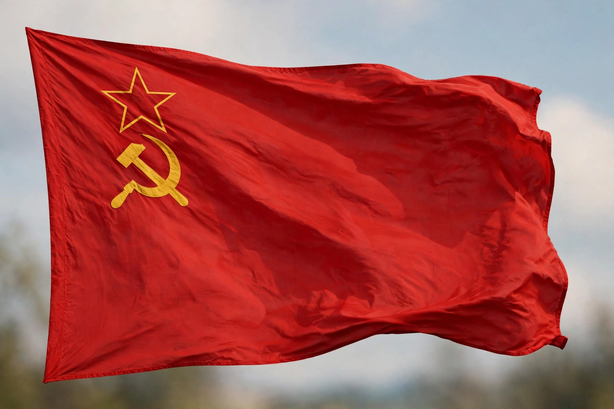

| Union of Soviet Socialist Republics | |
 Flag of the USSR | |
| Capital | Moscow |
|---|---|
| Established | 30 December 1922 |
| Dissolved | 26 December 1991 |
| Area | 22.4 million km² (largest country in the world) |
| Population | approx. 293 million (1991) |
| Leaders | Lenin, Stalin, Khrushchev, Brezhnev, Gorbachev, and others |
| Currency | Soviet ruble (SUR) |
The Union of Soviet Socialist Republics (USSR), commonly known as the Soviet Union, was a transcontinental country spanning Eastern Europe and Northern Asia from 1922 to 1991. It was a federal union of fifteen republics, the largest being the Russian SFSR, governed as a one-party state by the Communist Party with Moscow as its capital. At 22.4 million square kilometres it was the largest country in the world, and for much of the 20th century it was, alongside the United States, one of the two global superpowers.
The USSR was created in 1922 from the ruins of the Russian Empire after the October Revolution of 1917 and the Russian Civil War. Under Joseph Stalin (from the late 1920s), the country underwent forced industrialisation and collectivisation, accompanied by purges and famine that killed millions, and defeated Nazi Germany at enormous cost in the Great Patriotic War (1941–1945). Post-war, the USSR dominated Eastern Europe and entered the Cold War with the West, competing in nuclear arms and the space race — launching the first satellite (Sputnik, 1957) and the first human in space (Yuri Gagarin, 1961). After decades of stagnation, Mikhail Gorbachev's reforms of glasnost and perestroika in the late 1980s loosened central control; nationalist movements surged, and the Union was formally dissolved in December 1991, leaving fifteen independent states including Russia, Ukraine, and Belarus.
The Soviet system combined nominal federalism with centralised party rule: the Communist Party controlled the state at every level. The economy was centrally planned through five-year plans administered by Gosplan, with nearly all industry and agriculture state- or collectively owned. The USSR achieved rapid heavy-industrial growth, universal literacy, and major scientific accomplishments, but consumer goods remained scarce and productivity stagnated from the 1970s.
The Soviet Union's collapse ended the Cold War and reshaped global politics. Its legacy — in demographics, borders, industry, and political culture — continues to shape Eurasia, including the post-Soviet states and conflicts arising from Soviet-era boundaries.